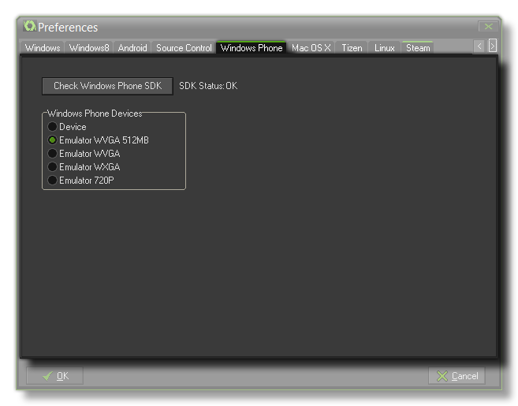

Windows Phone Preferences
The section details the Windows Phone preferences tab.

The first thing to do before starting to test or create a Windows Phone game, is to set up this section of the preferences for the Windows Phone module. All you really have to do here is check that SDK Status says
"OK" (GameMaker:Studio should have already performed the necessary checks when you upgraded to the module, but if not you can use the "the click the "Check SDK" button (Read the section on SDK
Problems for help) to force GameMaker:Studio to perform this action.
Next is the part where you can select the device that you wish to have the emulator use for testing your game on. The available devices are:
- Device - Your own Windows Phone test device, plugged into your PC by data cable.
- WVGA (512mb) - Emulates a memory-constrained Windows Phone 8 phone with a display size of 480 x 800.
- WVGA - Normal Windows Phone with a display of 480 x 800.
- WXGA - Large Windows Phone display at 768 x 1280.
- 720p - HD display at 720 x 1280.
Note that you can change the emulator target at any time through the preferences, and should you have any problems with the emulator, as long as the SDK is installed and checked, you can always test using a
Windows Phone device connected to the PC.
WARNING! When building your final game package, you must have this set to "Device" otherwise your submission to the Windows Store will fail.